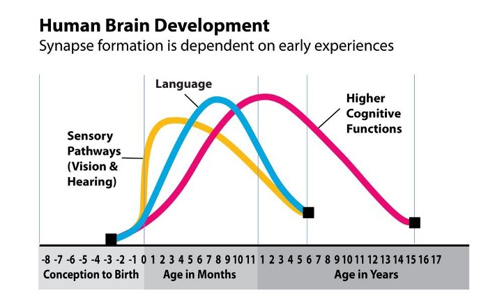

A child’s experiences during the early years of life have a lasting impact on the architecture of their developing brain.
During this important period, billions of brain cells called neurons send electrical signals to communicate with each other. These connections form circuits that become the basic foundation of brain architecture.
The architecture of the brain depends on the mutual influences of genetics, environment, and experience. Stimulating early experiences lay the foundation for later learning.
When someone says “My child is in an impressionable age,” they are unknowingly saying the same thing.
In the first few years of life, more than 1 million new neural connections are formed every second.
After this period of rapid increase, connections are reduced through a process called Pruning, so that brain circuits become more efficient.
Soon after birth, basic sensory, social, and emotional experiences are essential for optimizing the architecture of low-level circuits.
At later ages, more sophisticated kinds of experiences are critical for shaping higher-level circuits.
Just as in the construction of a house, certain parts of the formative structure of the brain need to happen in a sequence and need to be adequate to support the long-term developmental blueprint.
Low level circuits whose architecture was shaped by healthy experiences early in life provide high level circuits with precise, high-quality information.
A sensitive period is a period of time during brain development when the architecture of a neural circuit is particularly sensitive to the effects of environment and experience.
This period of time is critical for the development of that circuit, and experiences during this time can have a profound impact on the future function of the brain.
The strength or weakness of the brain’s architecture is determined by the quality of the child’s early environment and the availability of appropriate experiences at the right stages of development.
It is important to note that a sensitive period does not mean that a child cannot learn the skill or knowledge after the sensitive period has ended. It just means that it will be more difficult and that the child may not learn it as well.
The brain is most flexible during early childhood, but as a person matures, their brain specializes to assume more complex functions.
This makes it difficult to re-organize and adapt to new challenges. It is easier to influence a baby’s developing brain architecture than to rewire parts of its circuitry in the adult years.
Building more advanced cognitive, social, and emotional skills on a weak initial foundation of brain architecture is far more difficult and less effective than getting things right from the beginning.
As the maturing brain becomes more specialized to assume more complex functions, it is less capable of reorganising and adapting to new or unexpected challenges. Once a circuit is “wired,” it stabilizes with age, making it increasingly difficult to alter.
The interactions of genes and experience shape the developing brain. Although genes provide the blueprint for the formation of brain circuits, these circuits are reinforced by repeated use.
A major ingredient in this developmental process is the Serve and Return interaction between children and caring adults.
This interaction helps to determine which brain circuits are used more frequently and which are pruned away.
If you are a parent of 8–13 year old, here are 5 simple ways to help your child take opportunity of the sensitive period
1.Encourage questions: A great way to help children with serve and return is to encourage questions. Asking questions throughout the day will help them think for themselves and communicate better.
2.Get creative: Another way to bond with your child and stimulate their mind is to get creative together. Doing arts and crafts or listening to music are both great options.
3.Engage in open-ended discussions: It can be tempting to simply explain things to children. However, engaging them in open dialogues about why things are the way they are can be more beneficial.
4.Play games: Games are a great way for children to problem-solve and use their imagination. Board games, puzzles, Sudoku are all great options.
5.Experience Grok: At Grok, kids team up and play our scientifically designed games. These games are designed to encourage intrinsic motivation while building critical thinking skills. Our games provide an experiential learning opportunity where kids have to apply their thinking skills while solving complex problems together!
Now that you are in 1% of Parents,
sign up for a Free Demo Session on Grok
1.The Timing and Quality of Early Experiences Combine to Shape Brain Architecture — Center on the Developing Child, Harvard
2.InBrief: The Science of Early Childhood Development — Center on the Developing Child, Harvard
3.Brain Architecture — Harvard University
4.Serve & Return — University of British Columbia
5.From Neurons to Neighbourhood — University of British Columbia